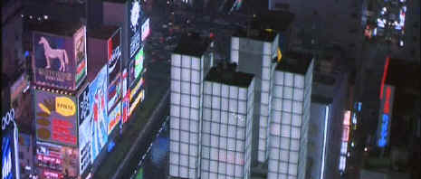

Paramount/1989/125m/WS 2.35
Clash of cultures and values is explored as an important textural element in Black Rain. New York cops look at graft and corruption as the norm while the Tokyo counterparts are appalled by it. Even the local Yakuza chief finds that American values have corrupted Japanese society. The formal rhythms of a Japanese police inspection are contrasted against the impulsive New York cops Working against the grain on unfamiliar turf.
 |
An Osaka cityscape reminiscent of Blade Runner©Paramount |
Black Rain explodes with
action and takes the time to develop character. It’s a rare combination. Even the
cityscape of Osaka is given a chance at developing it’s own identity. It’s easy
to dismiss Black Rain as an exercise is slick movie making, but it’s really a very
layered film that offers content between the raindrops.
Michael Douglas plays rough well in Wall Street suit or blue
collar. Douglas lets five o’clock shadow cast a worn look over his continence. His
diction is edged with a harshness that effectively captures the pragmatic cop Nick
Conklin. Andy Garcia is given a wonderful opportunity to shine in the role of Nick’s
partner Charlie Vincent . This is one of the only times I have seen Garcia let go with an
exuberance that seems totally natural on screen. He lost that innocent glow as the
importance of the roles grew. Too bad Andy. Ken Takakura is commendably stoic as Matsumoto
lending perfect balance to Douglas and Garcia. And dig that thick delivery of Tomisaburo
Wakayama as Sugai, one of the Oyabuns or family heads of the Japanese Mafia. It’s
reminiscent of Brando in The Godfather. Sugai is one dangerous dude.
Yes, Scott does know his way around those night time skylines.
The exquisite glitz that defined Blade Runner is alive and well in Black Rain.
This widescreen DVD delivers the varied lighting schemes of Black Rain for maximum
effect. The grit versus the glitz of New York City and Osaka is replicated admirably. The
image is consistently sharp with few enhancement artifacts disturbing the grand vision. Black
Rain has an excellent score by Hans Zimmer which sounds terrific on this Dolby Digital
5:1 DVD. Surround information is not aggressive, but ambiance is maintained meticulously.